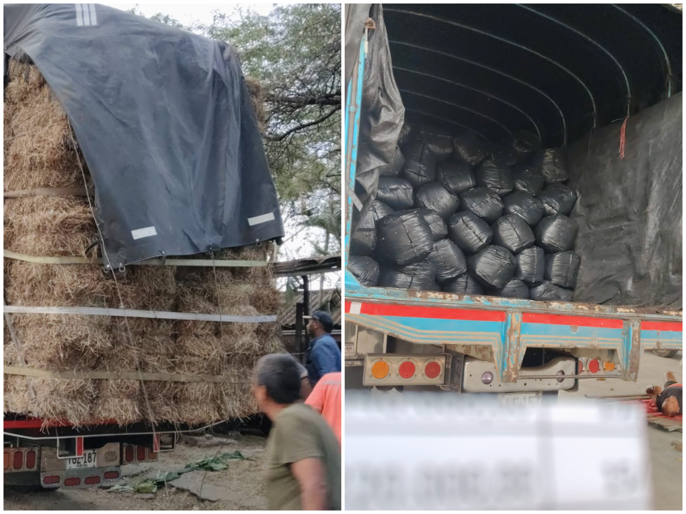

Somos una organización que agrupa a familias campesinas comprometidas con una producción justa y sostenible.
Trabajamos para fortalecer la agricultura local, mejorar las condiciones de vida en el campo y defender los derechos de quienes lo trabajan.
Representamos a productores, jornaleros y comunidades rurales asociadas en todo el territorio.
Promover una agricultura justa, sostenible y digna, defendiendo los intereses de las comunidades campesinas.
Solidaridad, transparencia, respeto por la tierra y trabajo colectivo guían cada una de nuestras acciones.